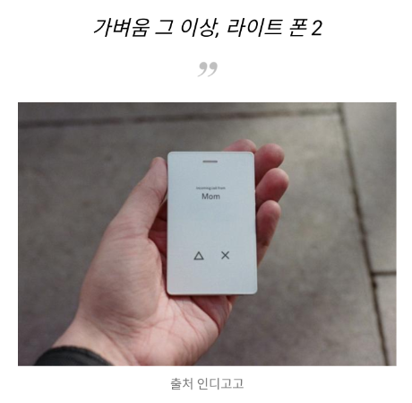

실시간 날씨&미세먼지 액자
인터넷과 연결되어, 실시간 날씨 어플을 제공한다. 굳이 사람들이 날씨와 미세먼지를 검색하지 않아도 사무실에 앉아 한눈에 날씨를 확인할 수 있게 한다.필수적인 기능
취침모드: 자는 시간 동안에는 화면을 꺼서 취침에 방해되지 않게 한다.
기상모드: 은은하게 화면을 밝혀준다. (부차적으로 음악기능과 날씨 알림기능도 가능할듯 ㅋㅋㅋ) /
경쟁자
카카오미니미세먼지 측정기
 
목표설정
단기적최종목표: 실시간 날씨 액자 만들기
왜: 일단 만들어서 회사에 하나, 집에 하나 놓자.
언제까지: 2019년 6월 전까지
1 STEP: 자료조사= 자료조사 완료(18.7.20)
2 STEP: 미세먼지 측정기 구입= sds011 구입 완료(7.29)
3 STEP: 디스플레이 선정(8.18)
4 STEP: 디스플레이 구입